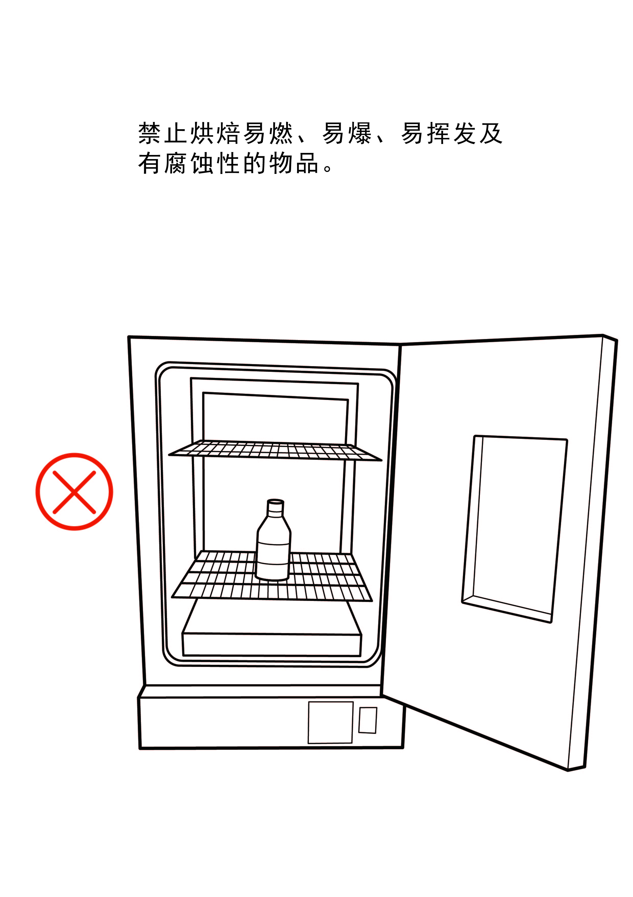

实验室中，各式各样的仪器是科学家在科研上的得力助手。但是,某些仪器如果操作不当，会引起不可估量的危险。因此，规范仪器操作是保障操作人员安全的重要屏障。在这里，我们介绍几种生物实验室常见实验仪器的安全操作规范,主要有灭菌锅、离心机、超净台、通风橱、生物安全柜、紫外分析仪、超低温冰箱、烘箱和液氮罐。
高压灭菌锅又名高压蒸汽灭菌锅，简称灭菌锅。它是一种利用电热丝加热水使之产生蒸汽，并且能维持一定压力的装置。一般以101.33kPa处理15-20min，此时锅内温度能达到121℃，在此蒸汽温度下，可以杀死各种细菌及一些耐热的芽孢。且高压蒸汽的穿透力强，因此能达到很好的灭菌效果，为最常用的灭菌方法。按照样式大小，可以分为手提式高压灭菌锅、立式高压灭菌锅和卧式高压灭菌锅。手提式高压灭菌锅结构比较简单，使用方便，价格较低，但容量太小，实验室中常用做母种和少量原种培养基灭菌；立式高压灭菌锅除具有压力表、放气阀、安全阀外，还有进水管、出水管等装置 ，容量适中。根据锅的大小，能装菌种瓶18一100瓶，在实验室中较常见。卧式高压灭菌锅又分为圆筒式和方柜式两种，每种又有单门和双门。容量较大，适合大规模的灭菌。
不同种类的灭菌锅有不同的使用方法，操作者使用之前应仔细阅读该型号的使用说明书。现我们就以下三种灭菌锅各举一例，介绍一下操作规程。
l 手提式高压灭菌锅（例：XFS-280A手提式高压灭菌锅）
（1）加水:向灭菌锅内加纯净水至水位没过电热管至少约1厘米（大约3升水），连续使用必须补充水量至上述位置。
（2）密封：将需要灭菌的物品均匀、错落有序地放置在灭菌桶内，然后将灭菌桶放入灭菌锅内，并将上盖盖上，放汽软管插入灭菌桶半圆槽内。在对齐上下槽后，对称地将蝶形螺母旋紧，以达到密封要求。
（3）加热：通电加热后，先将放气阀搭子放在垂直放气位置，让灭菌锅的冷空气溢出，当有蒸汽喷出时，再将放气阀搭子复位。当灭菌锅压力达到所需范围时，开始按不同物品的要求计算灭菌时间。
（4）灭菌结束：当灭菌过程到达所需时间后，切断电源，让灭菌锅内温度自然下降，当压力表的压力降为零时，打开排气阀，旋松螺栓，打开盖子，取出灭菌物品。做好使用登记。
l 立式高压灭菌锅（例：GI54DWS高压蒸汽灭菌锅）
（1）打开电源开关；
（2）逆时针旋转手柄直至腔盖打开；
（3）检查、确认排水阀已经关闭；
（4）往灭菌腔注入蒸馏水，直至水流进水位板中间的水位指示器；
（5）将待灭菌物品放入提篮，并置于灭菌腔中；
（6）往左轻推手柄直至横梁靠紧立柱，然后顺时针旋转手柄，当闭盖指示灯亮时，继续旋转半周直至手柄旋紧；
（7）选择灭菌程序，长按“start ”键3秒后直接启动程序；
（8）灭菌结束，当灭菌室内温度在80℃以下时，便可顺时针旋转手柄打开腔盖；
（9）取出灭菌物，打开排水阀排出灭菌水；
（10）关闭腔盖，关闭电源。做好使用登记。
l 卧式高压蒸汽灭菌锅（例：WDZX-200K卧式蒸汽灭菌器）
1、开机准备
（1）闭合电源断路器；
（2）打开蒸汽发生器进水截止阀；
（3）打开灭菌器面板上控制电源锁；
（4）查看灭菌器各个电器件是否正常；
2、灭菌器运行
（1）往外拉出手动安全销；
（2）向左旋转门启闭手柄至停止位置（“门已开”灯亮），门启闭手柄指示灯闪烁；
（3）开启灭菌器门，蜂鸣器长鸣；
（4）将灭菌物转载筐依次放入灭菌室后关闭灭菌门，将灭菌器门关至闭合位置；
（5）向右旋转门启闭手柄至停止位置（“门已关”灯亮）；
（6）在控制面板中按下温度键，然后依次按下“自动排气”和“辅助干燥”功能键；
（7）按下启动键，开始灭菌；
（8）按下启动键安全联锁锁止，防止错开灭菌门；
（9）灭菌结束，灭菌室内温度在85℃以下时，观察压力降为0后，同时长按上~、右}键解锁安全联锁；
（10）向左旋转门启闭手柄至停止位置，开启灭菌器门，取出灭菌物；
（11）关闭蒸汽发生器进水截止阀；
（12）断开电源断路器，做好使用登记。
4、 注意事项
（1） 使用灭菌锅者应提前培训；
（2） 受热易挥发或易爆物品，严禁采用高压蒸气方法灭菌；
（3） 瓶装液体严禁密封灭菌，应当在瓶塞上进行泄压处理, 液体盛装的体积不得超过总体积的3/4；
（4） 严禁在灭菌锅缺水或低水位时进行高压灭菌。
（5） 灭菌锅用水为去离子水或其他纯净水，严禁使用自来水，以防产生水垢；
（6） 灭菌过程中严禁打开锅盖，灭菌结束后应等压力归零后方可开盖，严禁带压操作；
（7） 定期检查安全阀的功能，避免因安全阀失效而导致压力过高发生爆炸；
1．简介
离心机就是利用离心机转子高速旋转产生的强大的离心力，加快液体中颗粒的沉降速度，把样品中不同沉降系数和浮力密度的物质分离开的一种机器。根据转速的不同，可将离心机分为低速离心机（转速<5000r/min）、高速离心机（5000<转速<25000）和超速离心机（转速>30000）。根据温度控制情况，将离心机分为普通离心机和冷冻离心机两种：普通离心机不带制冷系统，而冷冻离心机拥有制冷系统，能够对离心腔的温度进行调节，最高能达到40℃，最低能到-20℃。实验室常用的离心机以低速（包括大容量）离心机和高速冷冻离心机应用最为普遍；低速冷冻离心机最常用于生物大分子、沉淀物的大量、初级提取；高速冷冻离心机多用于搜集微生物、细胞、细胞碎片、大的细胞器、蛋白质的硫酸沉淀物以及免疫沉淀物等；超速离心机能对亚细胞器进行分级分离，并可用于蛋白质、核酸分子量的测定等分析操作。
2. 简易操作流程
|
3. 操作规范
在实验室中，许多样品都需经过离心处理，不同的实验目的、不同的样品对转速和温度的需求不同，大家可以根据自己的实验需求，自行选择合适的离心机。下面列举三种离心机的操作规程。需要强调的是，高速离心机和超速离心机属于重要精密设备，因其转速高，产生的离心力大，使用不当或缺乏定期的检修和保养，都有可能导致严重的事故，因此，使用离心机时都必须严格遵守操作规程。
l 低速离心机（例：LXJ-HB低速大容量多管离心机）
1) 接通电源：插接电源，打开电源开关。
2) 放入样品：将提前配平好的样品对称地放入转子中，依次盖上内盖和外盖。
3) 设置参数：设置好转速和时间。
4) 启动运行：按“开始”键，启动运行。
5) 离心结束后，取出样品，关闭电源，做好记录。
l 高速离心机（例：TGL16M高速冷冻离心机）
1) 操作前： a.检查离心机放置是否平稳，转子是否完好。
b.将待离心物品配平。
c.冷冻离心机可提前开机或将转子放入冰箱内进行预冷。
2) 接通电源：插接电源，打开电源开关。
3) 打开门盖：按停止键，离心机的门盖自动打开。
4) 安装转子：选择需要的转子，按要求安装，将提前配平好的离心样品对称的放入转子中，依次关闭离心机内盖和门盖。
5) 参数设置：设置离心参数（包括转子型号、转速或离心力、离心温度和时间）
6) 启动运行。按“启动”键开始离心；在离心机运行正常（无异常振动或声响）并达到设定转速之后，操作者方可离开。
7) 离心结束后，取出离心物品和转子，并擦干机体内的冷凝水，关闭电源，做好记录。
C、超速离心机（例：Optima L－80XP超速离心机）
1) 打开电源：按电源开关POWER至“ON”位置，打开电源。
2) 打开离心机门盖。
3) 选取与L-80XP超速离心机配合使用的转头。使用转头前，在离心机上设置相应的转头型号，选择合适的转速、运行温度及时间（不同转头的最高转速不同，需要按转头的属性进行设置）。
4) 选用与转头适配的离心管，确认离心管无任何破损后，向管内添加实验样品。
5) 确保实验样品两两配平后，将样品塞入吊篮（或管腔），拧紧吊篮盖（转子盖），使用水平转子时，所有吊篮必须按顺序全部挂于转子上。然后双手稳持转子，将转子垂直卡入机腔底部的转轴上。关闭离心机盖。
6) 真空操作：点击“VACUUM”键，等真空值降至转速允许的数值以下时，点击“ENTER”键确认，并按“START”键开始运行。
7) 离心结束后，再次点击“VACUUM”键，待气压平衡后打开机盖，取出转子，取出实验样品。
8) 关闭电源，做好使用登记。
4. 注意事项
1) 离心之前必须在天平上精密地平衡离心管和样品，平衡时重量之差不能超过各个离心机说明书上所规定的范围。放置时将平衡的样品对称安放。
2) 冷冻离心机在运行之前，转头可提前放入离心机内预冷，离心机在预冷状态时，离心机盖必须关闭。离心结束后取出转头并擦干腔内冷凝水。
3) 根据离心液体的性质及体积选用合适的离心管。超速离心前，检查转子离心管是否有裂痕，严禁使用有锈蚀或裂纹的转子和离心管。同时确保转头固定在轴上。
4) 在离心过程中，未达到设定转速之前，操作人员不得离开。启动过程中若听到异常声响或观察到离心机异常振动，需立即按停止键，待转子停稳后，再开盖检查样品是否配平或转子是否安装好。
1. 简介
超净台是一种提供局部高洁净工作环境的净化设备，能够防止来自外部环境的污染。超净工作台根据气流的方向分为垂直流超净工作台和水平流超净工作台，垂直流超净台由于风机在顶部，风垂直吹，多用在医药工程领域，这样保证人的身体健康；水平流工作台风向往外，所以多用在电子行业，对身体健康影响不大。根据操作结构分为单边操作及双边操作两种形式，按其用途又可分为普通超净工作台和生物（医药）超净工作台。
2. 简易操作流程
 |
3. 使用规范
操作前准备：打开总电源，打开紫外灯，紫外照射20min，然后关闭紫外灯，启动风机，使风机在中速下运行10min左右。
正式操作：打开照明灯，同时保持风机在中速下运行，进行实验操作。
结束操作：操作完成后，继续保持风机运行10min，然后依次关闭风机、照明灯和电源。
4. 注意事项
（1）超净工作台内严禁长时间存放无关的物品，以防干扰工作区的洁净气流方向。
（2）紫外线对皮肤和视网膜有很强的刺激性，操作时应避免紫外线直射，紫外照射时要关闭玻璃移门。
（3）在带移门的工作台操作时，移门的开启高度不宜过高（如拉至顶端），也不宜关至过低（如落至台面），以免影响风速和洁净度。
（4）避免频繁开关紫外灯和照明灯，以延长灯管使用寿命；
（5）定期检查空气滤网等滤材，老化严重时应及时更换。
1. 简介
生物安全柜（见下图）主要用于操作原代培养物、菌毒株以及诊断性标本等具有感染性的实验材料时，保护操作者、实验室环境以及实验材料，使其避免暴露于上述操作过程中可能产生的感染性气溶胶和溅出物。生物安全柜可分为一级、二级和三级，以满足不同的生物研究和防疫要求。
2. 简易操作流程
 |
3. 操作规程（例：BSC-1000-Ⅱ-B2生物安全柜）
（1）在准备实验操作之前，用75%的洒精进行彻底的清洁工作。
（2）打开电源，为了实现工作区域的自净，将风机与紫外灯同时打开。按风机开关，风机运转时风机指示灯发绿光；按紫外灯开关，紫外灯发光时紫外灯指示灯发红光。
（3）待风机与紫外灯同时工作30分钟后，关闭紫外灯，开始实验操作。
（4）实验操作结束后约10分钟（工作区域自净时间）以后再关闭风机。
（5）关闭电源。
4. 注意事项
（1）工作时不要将移门移过安全线的高度（200mm处）。若将移门开口抬高至200mm以上，则有气流不能平衡的危险。（当移门开口抬高至200mm以上时，则蜂鸣器鸣叫报警）
（2）其它器具的使用不得妨碍安全柜内的气流。不要将物品置于吸风口中或吸风口上方，以免因吸气量减少而影响生物安全柜的性能。
（3）实验操作结束后，带入安全柜内的物品要进行杀菌处理，最好是能够实施抛弃处理。
1． 简介
通风橱（见下图），又称通风柜，是实验室，特别是化学实验室的一种大型设备。 通风橱能将实验过程产生的有害气体有效排出，从而减少实验者和有害气体的接触，一些易挥发的有毒试剂的添加也可以在通风橱中进行，因此它能很好地保护工作人员和实验室环境。如需完全隔绝有毒气体则需要使用手套箱。
2. 简易操作流程
3．操作规范
（1）打开电源，启动风机系统，确定通风柜处于排风状态；
（2）打开玻璃视窗至使用者手肘处（半开），使操作人员能够将手伸入柜内进行实验操作，而胸部以上则受玻璃视窗的安全钢化玻璃所屏护；
（3）操作人员暂时离开时，应使柜内实验程序自行反应或暂停实验，并将调节门开至最低开度；
（4）工作结束后，应将所有相关的水、电、气开关予以关闭，并将调节门降至最低位置后方可离开。
3. 注意事项
（1） 玻璃视窗全开状态仅在组装、调试内部仪器设备或清洁柜内空间时方允许出现，操作时不要将玻璃视窗完全打开；
（2） 实验人员在通风柜实验进行实验时，不要将头伸入调节门内，以避免危险。
（3） 通风柜内应避免放置非必要物品、器材，以免干扰空气的正常流动。
（4） 实验物品、器材放置在通风柜内时，应距离调节门内侧150mm左右，以确保排气之顺畅。
1. 简介
紫外分析仪是利用紫外线照射经荧光染料结合的核酸样品，并通过检测所发射荧光的强度对样品进行分析的仪器；紫外分析仪分为三用紫外分析仪、暗箱式紫外分析仪、可照相紫外分析仪等系列，各有不同的用途。在生物实验室主要用于核酸电泳分析、检测，常用紫外分析仪对DNA、RNA凝胶电泳样品进行观察拍照与切胶操作。紫外分析仪广泛应用于涉及分子生物学、生物制品、农业等生命科学研究领域的科研院所与企业单位。
 |
3. 操作规范（例:tanon 2500成像系统）
1) 带好手套，将电泳好的凝胶样品放在仪器中央
2) 打开总电源开关。开启电脑至WINDOWS处于正常的工作状态
3) 打开主机上层箱内电源开关。双击桌面上的“GIS”图标，进入软件。根据需要，点击快捷栏上的按钮。
4) 打开反射白灯灯开关。
5) 调节光圈大小，使画面内能观察到图像。
6) 在计算机显示屏上观察凝胶是否已全部在显示区域内，如果凝胶位置不在画面中央，请重新移动凝胶位置；如画面内未能将凝胶拍全，请调节变焦。
7) 关闭反射灯开关，打开投射灯开关。
8) 观察计算机上显示的图像，重新调节光圈大小，避免图像过亮出项光晕；调节焦距使图像清晰。
9) 拍摄并保存，完毕后关闭灯源电源，关闭软件窗口，并将废弃的凝胶扔到指定的垃圾桶。
4. 注意事项
（1） 放置胶片前应关掉紫外灯，防止紫外线泄漏灼伤人体。
（ 2） 观察后应及时关闭电源开关，以延长紫外灯的寿命。
（ 3） 严禁用金属物和其它硬物直接接触紫外滤光片，以免刮花紫外滤光片。
（ 4） 防止电泳液污染紫外滤光片。
（ 5） 定期用无水乙醇清洁紫外滤光片，以防紫外滤光片发霉。
（七）超低温冰箱
1. 简介
超低温冰箱是生物化学与分子生物学实验室中的必备仪器，主要用于生物样品或药品的保存。超低温冰箱的温度范围大致从-60-150℃，可用于保存药物、酶、激素、菌种、干细胞、疫苗、血小板、精液、移植的皮肤以及从人体抽取的标本，植物种子的种质库，基因克隆库和一些重要的生物和化学试剂等。
2、注意事项
1) 超低温冰箱在使用中应避免压缩机长时间持续运行而致损坏。打开冰箱后，应迅速取放物品，打开时间不能过久；严禁单次放入过多或温度较高的物品；待保存物品需分批放入或预冷后放入，并调节冰箱的设置温度，进行阶梯式降温，直至所需要的低温。
2) 样品必须用耐低温的容器装好，才可放入冰箱。强酸及腐蚀性的样品不宜冷冻。
3) 从冰箱中取样品时要带安全手套，防止被冻伤。
4) 如遇停电，需依次关闭电池开关、电源开关、外部电源。来电后，反向依次打开各个开关。；低速冷冻离心机最常用于生物大分子、沉淀物的大量、初级提取；高速冷冻离心机多用于搜集微生物、细胞、细胞碎片、大的细胞器、硫酸沉淀物以及免疫沉淀物等；超速离心机能对亚细胞器进行分级分离，并可用于蛋白质、核酸分子量的测定等分析操作。
1. 简介
烘箱是实验室中的一种加热设备。利用电热丝隔层加热使物体干燥，适用于比室温高5℃~300℃范围的烘培、干燥、热处理等。
2. 使用规范与注意事项
1) 烘箱应使用独立电源插座，使用前需确认供电电源的电压与产品要求相符。
2) 烘箱外壳必须有效接地，切不可以零线或中线作地线，
3) 烘箱应放置在具有良好通风条件的室内，不可紧贴墙壁，在其周围不可放置易燃易爆物品。
4) 烘箱内物品放置切勿过挤，必须留出空间。不允许将任何物件插入或堵住进风、出风口（槽）阻挡空气循环。
5) 禁止烘焙易燃、易爆、易挥发及有腐蚀性的物品。
6) 烘箱使用温度在100℃以上时，不得触摸工作箱门、观察窗及箱体表面，以防烫伤。
7) 当需要观察工作室内样品情况时，可开启外道箱门，透过玻璃门观察。但箱门以尽量少开为好，以免影响恒温。特别是当烘箱温度在200℃以上时，开启箱门有可能使玻璃门骤冷而破裂。
8) 有鼓风的烘箱，在加热和恒温的过程中必须将鼓风机开启，否则影响工作室温度的均匀性和损坏加热元件。
9) 要做好干燥箱的日常维护保养工作，易耗品如密封圈、热风电机、加热管、拉手等应定期保养，使用、维护应有专人进行，保养或更换备件时必须先切断电源，保证安全。

1.简介
液氮罐在生物实验室中，主要用于生物样本的活性保存。如在生物医学领域内的疫苗、菌毒种、细胞以及人、动物的器官，都可以浸泡于液氮中，长期活性保存。需要时取出解冻复温即可使用。液氮罐一般分为液氮贮存罐、液氮运输罐两种。贮存罐主要用于室内液氮的静置贮存，不宜在工作状态下作远距离运输使用；液氮运输罐为了满足运输的需要，作了专门的防震设计，除可静置贮存外，还可在充装液氮状态下，作运输容器使用，但也应避免剧烈的碰撞和震动。
2. 操作规范
（1）打开液氮罐盖子之前要佩戴手套和护目镜，穿戴白大褂。
（2）缓慢打开液氮罐盖子。
（3）缓慢拉出提斗样品储存盒，注意避免碰擦颈管内壁，以免损坏颈管。待液氮没有呈股流下时，盖好盖子，以免多跑氮。
（4）将样品储存盒放置在平整防冻的台面，迅速取出目标样本。
（5）取样结束后，缓慢打开盖子，将提斗样品储存盒缓慢放回液氮罐中，盖好盖子。
（6）定期检查液氮罐的密封状态，当液氮残余量只够使用1个星期时，补充液氮。充填液氮，宜在通风良好的地点进行。充填液氮的速度要缓慢，先注入小量，然后稍停几分钟，使其冷却再逐渐注足至规定容量。
3． 注意事项
（1） 要有专人负责管理、使用和保养。液氮罐贮存室要空气流通,如在密闭的室内贮存多只液氮罐，则有可能蒸发的氮气将滞留室内，从而造成缺氧状态，就有可能发生窒息事故。
（2）取冻存样品时要小心被冻伤。
（3）液氮罐要保持垂直，严禁倾倒罐内液氮以免发生事故。
（4）操作液氮罐要轻拿轻放避免与其他物体相碰撞。